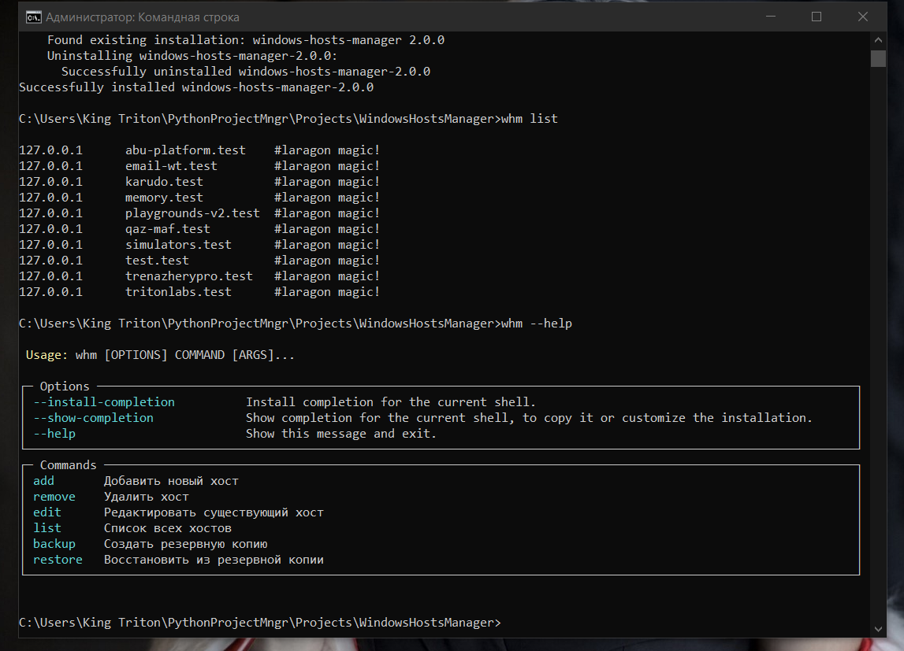
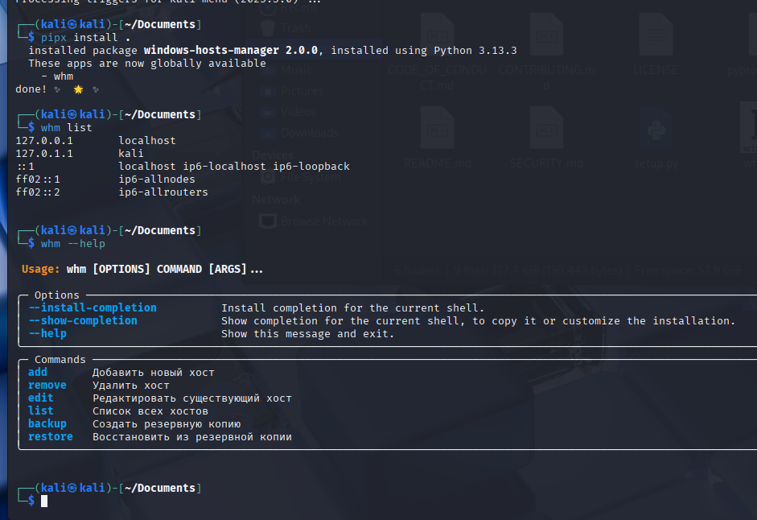

Документация WindowsHostsManager
Версия: 2.0.0 | Автор: King Triton | Обновлено: 2 ноября 2025
Обзор
WindowsHostsManager — это кроссплатформенная CLI-утилита для управления файлом hosts в операционных системах Windows и Linux.
Позволяет выполнять следующие действия:
- Добавлять и удалять записи в файле
hosts; - Просматривать текущие записи;
- Создавать резервные копии и восстанавливать файл
hosts; - Редактировать существующие записи;
- Работать как из терминала, так и из собранного .exe (Windows).
Установка
WindowsHostsManager можно установить с помощью pipx — рекомендуемый способ для CLI-приложений на Python.
Windows
- Убедитесь, что установлен
Python 3.8+. - Откройте PowerShell или CMD с правами администратора.
- Установите pipx:
- Перейдите в папку проекта:
- Выполните установку:
- После установки программа доступна глобально:
pip install pipxcd C:\Users\King Triton\PythonProjectMngr\Projects\WindowsHostsManagerpipx install .whm listLinux (например Kali)
- Установите pipx:
- Перейдите в папку проекта:
- Установите:
- Запустите утилиту:
- Для записи в системный файл
hostsиспользуйте:
sudo apt install pipxcd ~/WindowsHostsManagerpipx install .whm listsudo whm add 127.0.0.1 example.localПосле установки можно использовать whm из любой директории в системе.
Использование
После запуска whm вы можете вводить команды напрямую в консоли.
whm helpПрограмма покажет список доступных команд и краткое описание каждой.
Команды
- whm add <IP> <hostname> — добавить запись в файл hosts.
- whm remove <hostname> — удалить запись по имени хоста.
- whm list — вывести текущие записи.
- whm backup — создать резервную копию hosts.
- whm restore — восстановить hosts из резервной копии.
- whm edit <hostname> — изменить IP для существующего хоста.
- whm clear — очистить экран терминала.
- whm help — справка.
- whm exit — выйти из программы.
Примеры
whm add 127.0.0.1 example.com
Added: 127.0.0.1 example.com
whm remove example.com
Removed entries for: example.com
whm list
Current entries in hosts file:
127.0.0.1 localhost
127.0.0.1 example.com
whm backup
Backup created: hosts.back
whm restore
Hosts file restored from backup.
Скриншоты
Windows 10

Kali Linux

Решение проблем
- Запускайте консоль с правами администратора (Windows) или используйте
sudo(Linux). - Убедитесь, что файл
hostsне открыт в другом приложении. - Если команда не работает — проверьте синтаксис и правильность аргументов.
- При ошибках создайте Issue на GitHub.
Контакты
Автор проекта: King Triton
Email: mdolmatov99@gmail.com